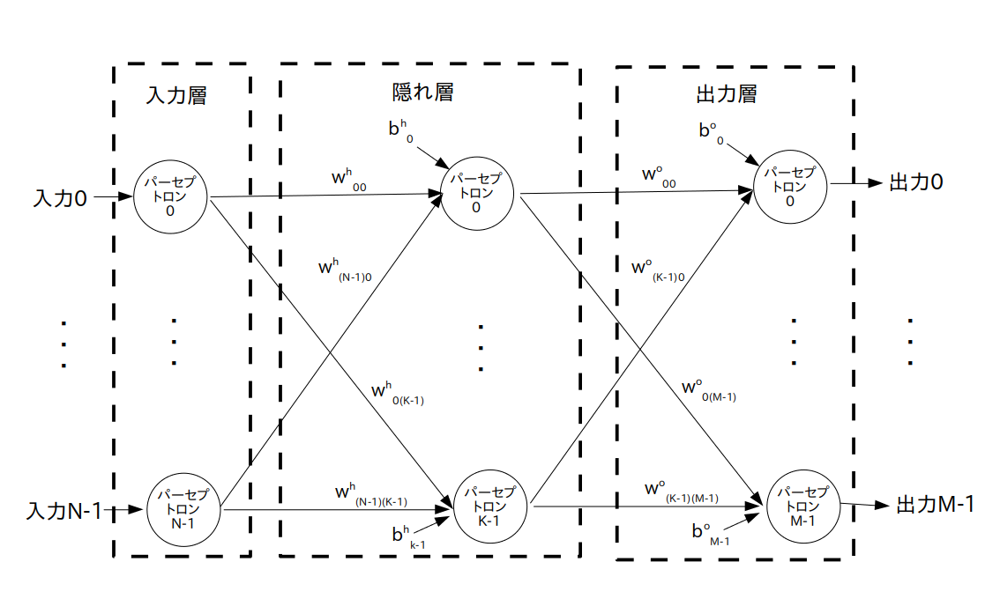

※ データフロー・グラフではなくて一般的なグラフ表現です

動物の脳は多数(人間の大脳の場合140億個位)の「神経細胞」という細胞がシナプス結合されて出来ています。
そこでまず数学者はこの「神経細胞」を数学的にモデル化した「パーセプトロン」を考案しました。
なお文献によってはパーセプトロンの事を「ユニット」や「ノード」と呼ぶこともあります。
さてパーセプトロンは $n$ 個の入力信号に対し 1 個の信号を出力する関数 $f()$ であり、以下の数式で表すことができます。
この $f()$ の事を「活性化関数」と呼びます。
$y$ : 出力信号
$f()$ : 活性化関数
$x_i$ : $i$ 番目の入力信号、 $(i=0,1,\cdots,n-1)$
$w_i$ : 変数、$i$ 番目の入力信号に掛けられる重み(weight)と呼ぶ
$b$ : 変数、バイアス(bias)と呼ぶ
活性化関数 $f()$ の選び方には色々な流儀があるのですが、世間的には「sigmoid 関数」、「双曲線正接(tanh)関数」、「ReLU (Rectified linear Unit)」、「softmax 関数」などが良く使われています。
なおパーセプトロンは以下の様なグラフで表すことが出来ます。
ただしこのグラフは TensorFlow のデータフロー・グラフとは異なる一般的なグラフです。
つまりこの図の○はオペレーションではなくて活性化関数 $f()$ を表しています。
※ データフロー・グラフではなくて一般的なグラフ表現です
次に数学者は「パーセプトロン」を多数結合して「多層パーセプトロン(通称 MLP: Multi-Layer Perceptron)」と呼ばれるネットワークを考えました。
MLP は「入力層」、「隠れ層(中間層とも言う)」、「出力層」ごとに層(レイヤー)分けされた多層構造になっています。
なお MLP の各層は 2 層以上の多層構造になったり、再帰構造になったりすることもありますが、今回は話を簡単にするために再帰構造を含まない MLP だけを考えることにします。
再帰構造を含まない MLP のことを一般に「フィードフォワードニューラルネットワーク」と呼んでいます(図 2)。
※ データフロー・グラフではなくて一般的なグラフ表現です

さらに話を簡単にするため、今回は中間層が 1 層だけで出来ている 3 層ニューラルネットワークを扱いたいと思います(図3)。
※ 正確には「3 層フィードフォワードニューラルネットワーク」ですが、長いので単に「3層ニューラルネットワーク」とだけ書きます
※ データフロー・グラフではなくて一般的なグラフ表現です
入力層が N 個、隠れ層が K 個、出力層が M 個のパーセプトロンで出来ているフィードフォワードニューラルネットワーク
$w_{ij}^{\textrm h}$ ・・・ 入力層のパーセプトロン No.$i$ の出力信号から、隠れ層のパーセプトロン No.$j$ への入力に掛けられる重み
$b_{j}^{\textrm h}$ ・・・ 隠れ層のパーセプトロン No.$j$ のバイアス
および
$w_{ij}^{\textrm o}$ ・・・ 隠れ層のパーセプトロン No.$i$ の出力信号から、出力層のパーセプトロン No.$j$ への入力に掛けられる重み
$b_{j}^{\textrm o}$ ・・・ 出力層のパーセプトロン No.$j$ のバイアス